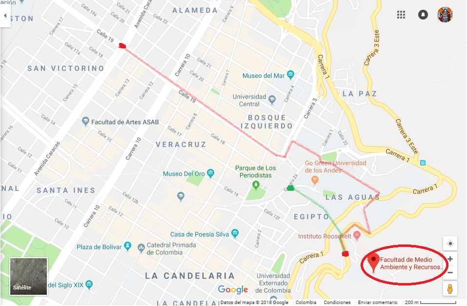

Aquí podras encontrar toda la información con respecto a la ubicación, como llegar, y como luce la fachada o la primera vista que se obtiene cuando se llega a la universidad.
La universidad distrital Francisco José de Caldas se ubica en Bogotá, la ciudad capital de Colombia.

Esta universidad esta distribuida en 5 sedes alrededor de diferentes zonas de Bogotá, estas zonas y sus respectivas sedes son:
Hay diferentes formas de llegar, aqui pondremos las 2 formas mas usuales y mas utilizadas pro las personas para llegar a este sitio.
Estos son los edificios que se pueden apreciar desde la entrada de la universidad
 Aqui listamos los edificios que componen la facultad:
Aqui listamos los edificios que componen la facultad: